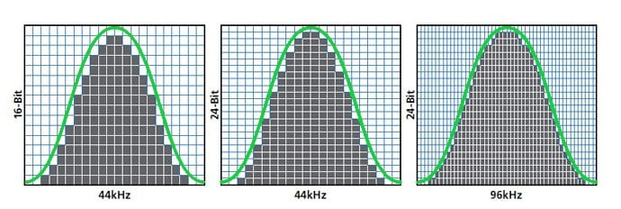

Fontos az, hogy a zenét milyen minőségben streameljük. A jobb minőségű zene nagyobb
adatforgalmat generál, viszont kevésbé lesz veszteséges. Vannak szolgáltatók, ahol
veszteségmentesen tudunk streamelni zenéket. Nem árt megérteni és tisztában lenni a
mintavételezés (Sample Rate) és a bitmélység (Bit Depth) fogalmával.
Hangminőség
Fontos figyelembe venni, hogy mennyit fizetünk az adott szolgáltatásért. Vannak különböző
csomagok, például társas vagy családi csomag. Itt az adott összegért több fiók (családinál
általában 6, társasnál értelemszerűen 2) kap prémium funkciókat. Vannak szolgáltatók, akik a
megfelelő dokumentumok igazolásával adnak hallgatói kedvezményt. Számos ilyen
alkalmazás létezik manapság, legtöbbjüknek akkor van értelme, ha előfizetünk. Vannak persze
ingyenes verziók
is
de ott különböző funkciók nem elérhetőek.
Mintavételezés
A mintavételezés az adott időtartam alatt rögzített hangminták száma,
ezt Hertzben
(Hz) vagy kilohertzben (kHz) mérjük. Azaz, ha 44100 Hz-ről beszélünk azt
mondjuk, hogy 1
másodperc alatt 44100-szor Azaz tegyük fel, hogy van egy mikrofonunk, és felveszünk vele
egy másodpercnyi hangot, akkor az a mikrofon azt a hangot 44100-szor fogja felvenni.
Minél nagyobb ez a szám annál jobb minőségű hangot fogunk kapni.
Bitmélység
Az egyes mintákba átvitt információ/adat száma. Ez határozza meg a különböző minták
minőségét.

Jól látni, hogy a bitmélység az y-tengelyen, a mintavételezés az x-tengelyen
jelenik meg.
Veszteséges és veszteségmentes fileok
Ezeknek többféle fajtája létezik, de röviden annyi a lényegük, hogy az eredeti fájlokat
minél
kisebb méretűre van tömörítve annál könnyebb a hordozhatósága (a fájl mérete miatt) és
annál
kevesebb adatforgalmat használ, viszont a hangminőség silányabb lesz.
Itt egy érdekes
videó az
mp3 és a wav fájlformátumról, hogy mennyiben
különböznek.
Ez annyira nem releváns, mert ahogy haladunk az időben az újabb zenék már a legtöbb helyen
megtalálhatók, viszont, ha régebbi kevésbé ismert zenét szeretnénk hallgatni, akkor az nem
biztos, hogy elérhető lesz ott, ahol mi szeretnénk.
{kind=link}